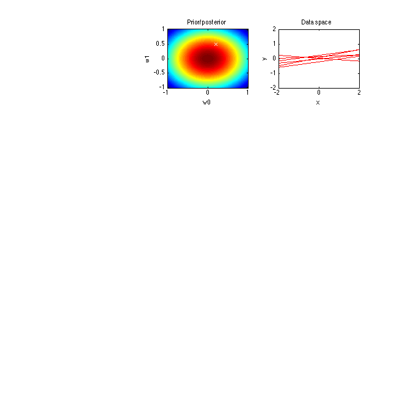
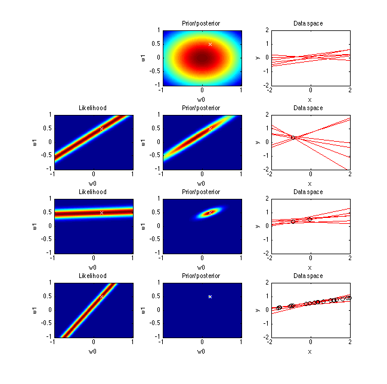

Contents
Bayesian Regression
This is the Bayesian Linear Regression The basic equation for Bayesian Regression is Posterior = Likelihood * Prior
clc;
clear;
close all;
Generate data: generate t from x
x=-2:0.01:2; beta=9; threshold=0.15;% This is threshold for point selection noise=0.02*normrnd(0,1/beta,[1 size(x,2)]); % Ground truth W0=[0.5 0.2]; t=W0(1)+W0(2)*x+noise; % plot(x,t,'-'); % hold on axis=-1:.01:1; mu=[0 0]; sigma=eye(2); [w0, w1]=meshgrid(axis,axis);
Original probability distribution
Original Prior is Normal distribution with variance 1 and mean 0
p=mvnpdf([w0(:),w1(:)],mu,sigma); P=reshape(p,length(axis),length(axis)); % Set figure size set(gcf,'units','points','position',[0,0,650,800]) lid=1;% Line id subplot(4,3,2+3*(lid-1)); imagesc_normal(axis,axis,P); hold on plot(W0(2),W0(1), 'wx') hold off xlabel('w0'); ylabel('w1'); title('Prior/posterior'); % plot out the subfigure of 6 randomly selected points subplot(4,3,3+3*(lid-1)); red_idx=find(P>0.15); msize = numel(red_idx); psel=red_idx(randperm(msize, 6)); w2=mod(psel,201)*.01-1; w1=((psel-mod(psel,201))./201)*0.01-1; % p_test=normpdf(w2,0,1).*normpdf(w1,0,1) % P(psel) for j=1:6 fx=w1(j)+w2(j).*x; plot(x,fx,'r'); ylim([-2 2]); hold on end hold off xlabel('x'); ylabel('y'); title('Data space'); randpoint=randperm(size(x,2),20);
Training
Randomly select 20 points to train the model
for i=1:20 % Compute Maximum likelihood W=repmat(axis,size(axis,2),1)+repmat(axis',1,size(axis,2)).*x(randpoint(i)); pml=normpdf(W,t(randpoint(i)),1/beta); % Posterior = MLH * Prior P=pml.*P; %Plot out graph at specific point. if (i~=1) && (i~=2) && (i~=20) continue end lid=lid+1; subplot(4,3,1+3*(lid-1)); imagesc_normal(axis,axis,pml); xlabel('w0'); ylabel('w1'); title('Likelihood'); hold on plot(W0(2),W0(1), 'wx') hold off xlabel('w0'); ylabel('w1'); subplot(4,3,2+3*(lid-1)); imagesc_normal(axis,axis,P); hold on plot(W0(2),W0(1), 'wx'); hold off xlabel('w0'); ylabel('w1'); title('Prior/posterior'); % plot out the subfigure of 6 randomly selected points red_idx=find(P>0.15); subplot(4,3,3+3*(lid-1)); msize = numel(red_idx); % Randomly select 6 points psel=red_idx(randperm(msize, 6)); w2=mod(psel,201)*.01-1; w1=((psel-mod(psel,201))./201)*0.01-1; for j=1:6 fx=w1(j)+w2(j).*x; plot(x,fx,'r') hold on end for k=1:i plot(x(randpoint(k)),t(randpoint(k)),'ok') ylim([-2 2]); hold on end hold off xlabel('x'); ylabel('y'); title('Data space'); end